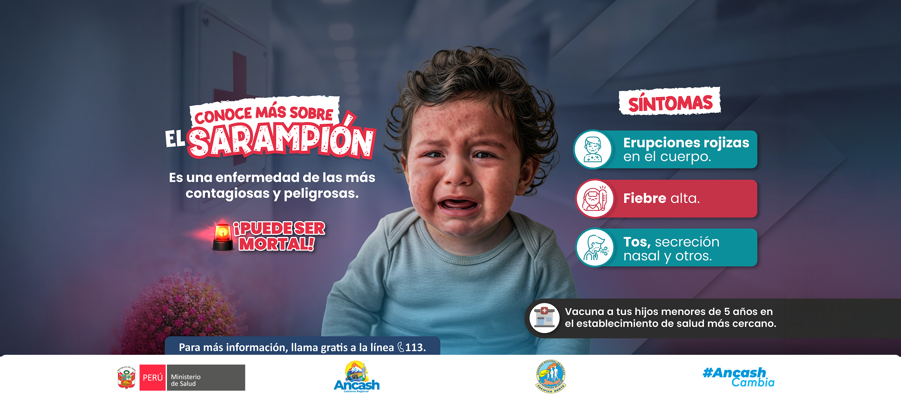

Sarampion sintomas

Un breve resumen de la primera noticia...
Noticia 2

Un breve resumen de la segunda noticia...
Noticia 3

Un breve resumen de la tercera noticia...

Un breve resumen de la primera noticia...
Un breve resumen de la segunda noticia...
Un breve resumen de la tercera noticia...